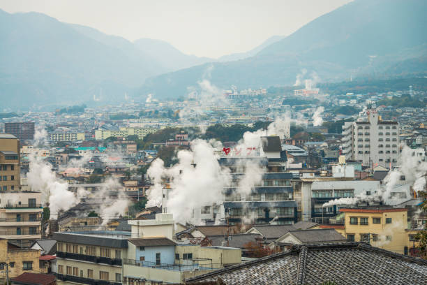
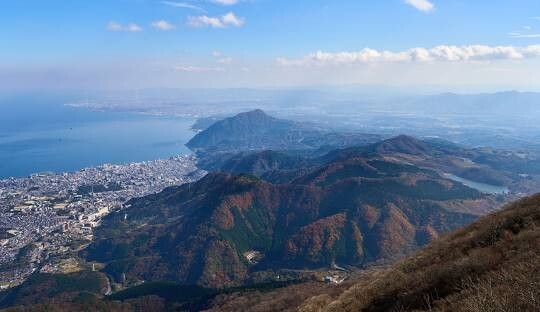
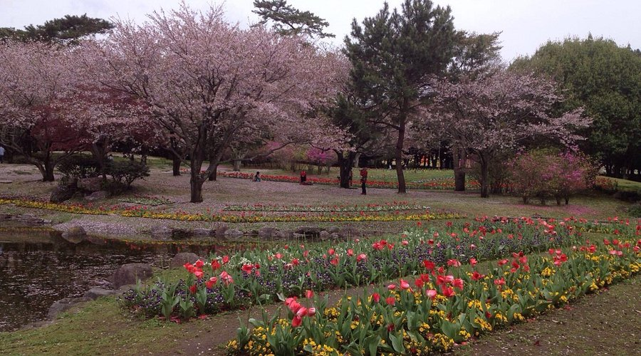

Famous for hot springs and unique natural beauty.
Beppu is a coastal city best known for its hot springs, or “onsen,” which are among the most famous in Japan. The city has a calm, laid-back atmosphere and is surrounded by mountains and ocean views. Steam rising from various parts of the city gives it a unique visual identity. Beppu is also home to Ritsumeikan Asia Pacific University (APU), bringing in a diverse international community. This mix of local culture and global students creates a unique environment that feels both peaceful and connected.



Peaceful, student-friendly, relaxed
Beppu is ideal for those who want a slower, more relaxed lifestyle. It’s perfect for students and anyone looking to escape the chaos of big cities while still having access to a strong community and natural beauty.